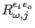
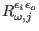
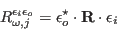

Next: Scattering geometry Up: mcdisp - the Calculation Previous: Powder-averaging the spectra Contents Index
Using the option -x and -xa the RIXS cross section can be calculated by mcdisp. Option -x calculates resonant inelastic x-ray intensities maximized with respect to azimuth. Option -xa calculates resonant inelastic x-ray intensities with complete azimuth dependence for each reflection.
The formalism is based on [30, equ.8 ff],
e.g. the observables
 are the 9 components (
are the 9 components ( =xx xy xz yx yy yz zx zy zz)
of the tensor , which is related to the operator
 in [30] by
=xx xy xz yx yy yz zx zy zz)
of the tensor , which is related to the operator
 in [30] by
|  | (61) |
Here the vector
describes the polarisation of the incoming / outgoing
photon beam (linear (real) or circular polarized (complex) light).
Vector components (e.g.
to the xyz coordinate system, where
 ,
,
 and
and  perpendicular to
perpendicular to  and
and  .
.
For the isotropic ion the scattering operator is given by
In order to use this expression, the conductivities  have
to be entered in the sipf file, e.g.
have
to be entered in the sipf file, e.g.
SIGMA0r=1.32 SIGMA1r=1.32 SIGMA2r=1.32 SIGMA0i=1.32 SIGMA1i=1.32 SIGMA2i=1.32('r' and 'i' stand for real and imaginary part, respectively).
Note: in module so1ion the scattering operator is given in terms of the total angular momentum instead of .
If a more complex tensor is required, it's components can be defined in the sipf file using the perlparse option.